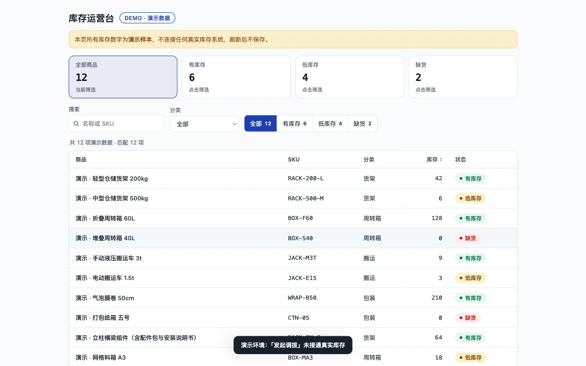
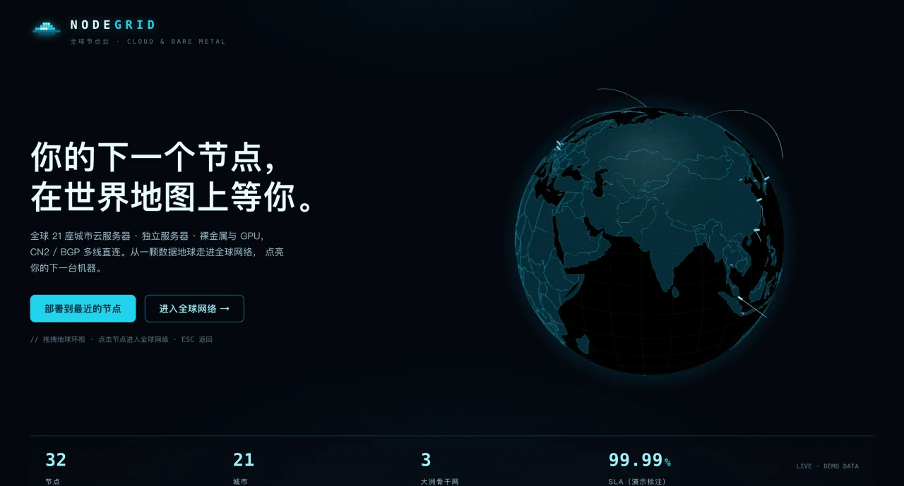
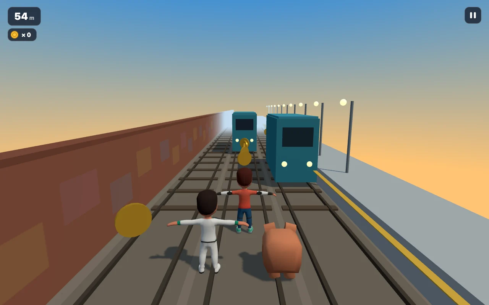
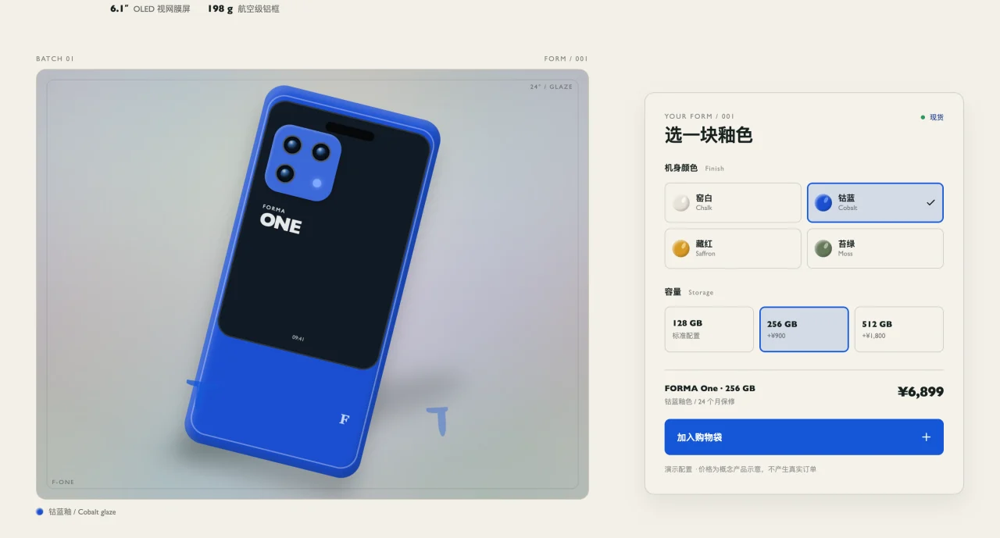
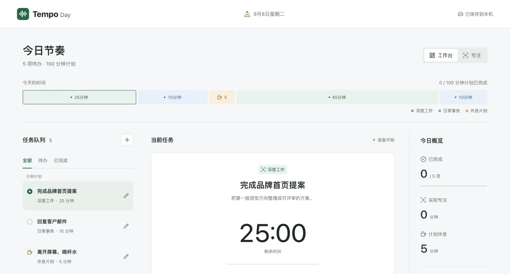
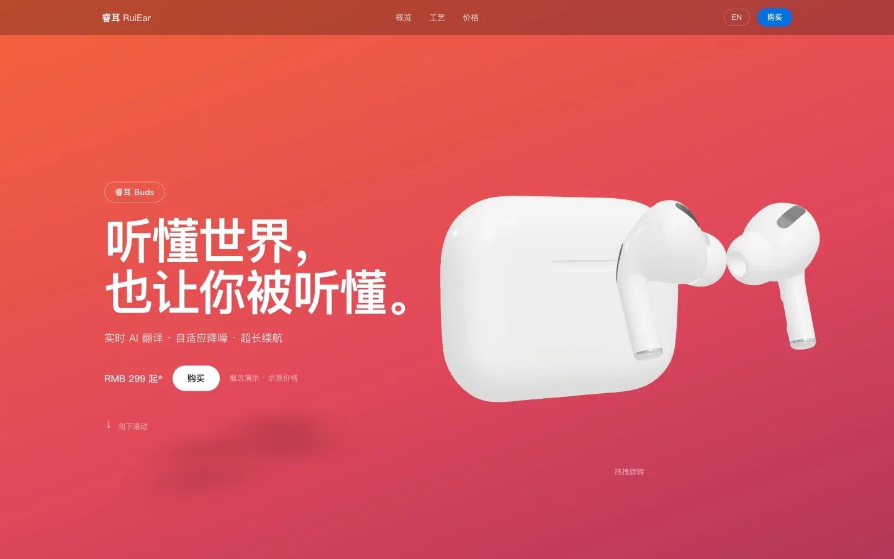
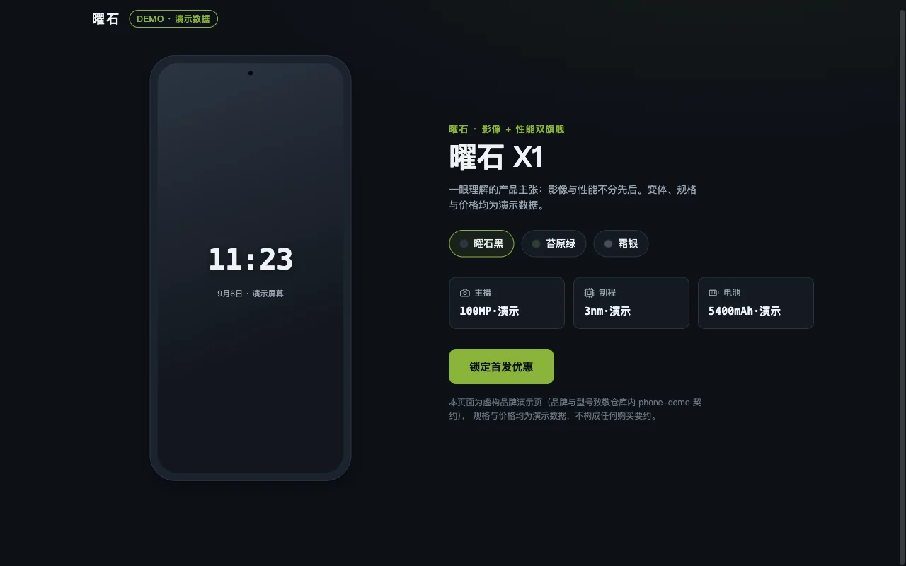
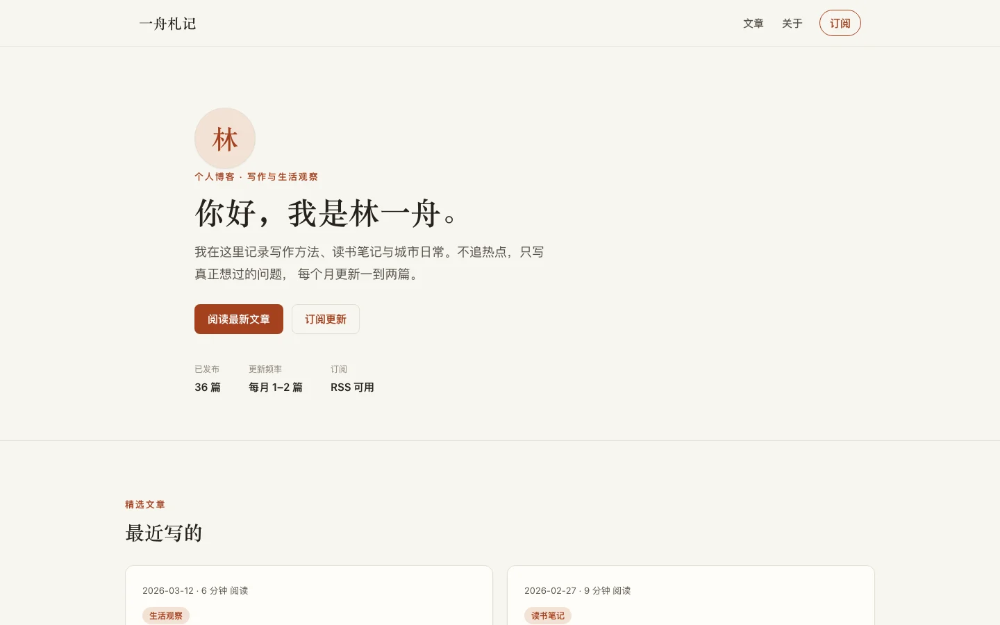

产品成果总览（kit 工作流的产出案例）
以下截图全部来自本仓第一方产物（showcase/products/media/，来源登记见其
SOURCES.md）——它们是真实运行截图，不是概念图。每个案例的验收边界以各自 README 与
docs/product-showcase.md 为准：截图证明对应页面某次检查结果，不代表所有生成任务都通过验收。
7 个案例在线上展厅 agent.kcos.club 可访问（其中 4 个可试玩）。
 积木小工坊
线上可玩
积木小工坊
线上可玩
3D 拼搭工作台：12 砖型 12 色、三个挑战、自由试玩；作品存本机浏览器。demo 125 项规则/状态测试。
线上打开 ↗

库存运营台
线上可玩
搜索/状态筛选/详情/批量归档的运营工具界面；12 列数据密集台账判据入库（行高/粘性表头/tabular-nums/状态三通道）。
线上打开 ↗

NODEGRID
线上可玩
3D 地球云节点分布可视化（虚构云商，数据非实时）；WebGL 失败提示与重试、离屏暂停经验证。
线上打开 ↗

地铁疾行
线上可玩
3D 跑酷小游戏；确定性物理与帧驱动渲染经验入库。
线上打开 ↗

FORMA One
线上可玩
虚构手机产品配置页；1440×900 真实 vite preview 渲染截图入库。
线上打开 ↗

Tempo 今日
线上可玩
当日任务与专注计时概念页；本机数据由项目独立处理。
线上打开 ↗

睿耳 RuiEar
线上展示
AI 耳机概念落地页（占位品牌，示意价格参数）。
线上打开 ↗

曜石 X1
历史截图案例
虚构产品展示页（历史截图案例，不提供试玩入口）。
仅历史截图，无线上入口

一舟札记
历史截图案例
虚构个人博客（历史截图案例，不提供试玩入口）。
仅历史截图，无线上入口
工作流层产出（不是页面，是方法）
除了以上界面案例，kit 的核心产出是工作流本身：六道门确认工作流、设计契约、五级证据等级、
131 项自动化测试、71 场景评测台账、131 页总任务执行清单与三条 ADR。这些在
docs/task-execution-checklist.md 与
docs/adr/ 可复核。